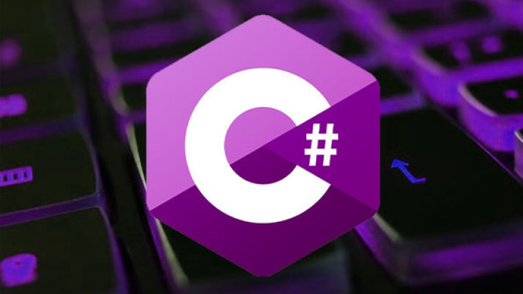

CATEGORY
Game Design
Game Design refers to applying your imagnation onto a Game that is made by you.

CATEGORY
Game Proggraming
Game Proggraming is used to create what your game characters or anything in the game does through a specific Programming Language.

CATEGORY
Game Art
Game Art is the what you see as a graphic, It is done by drawing the game environment and applying it to your game.